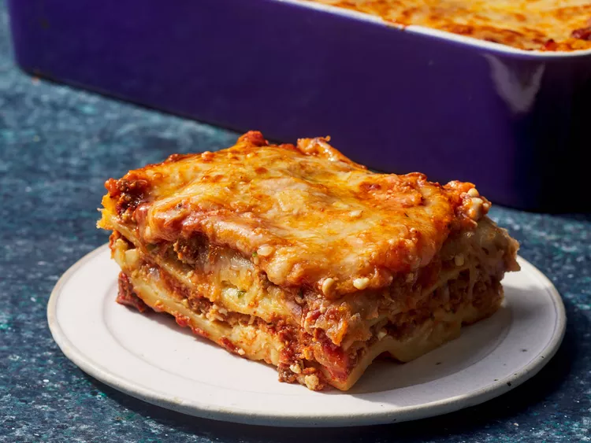

Lasagna Recipe
Home

DESCRIPTION
This is my mom's special homemade lasagna recipe with a meaty, made-from-scratch tomato sauce and a deliciously cheesy filling. A more traditional homemade lasagna filling would be made with ricotta but my mom's recipe calls for a blend of small-curd cottage cheese and Parmesan. I have found none better anywhere. Serve with a leafy green salad and crusty garlic bread.
INGREDIENTS
- · Meat: This lasagna recipe starts with a pound of ground meat (½ pound ground pork, ½ pound lean ground beef).
- Meat: This lasagna recipe starts with a pound of ground meat (½ pound ground pork, ½ pound lean ground beef).
- Onion:A diced onion is cooked until translucent with the ground meat.
- Canned tomatoes: You'll need a can of tomato sauce and a can of crushed tomatoes.
- Fresh herbs:For fresh flavor, chop two tablespoons of parsley and crush one clove of garlic.
- Sugar: A dash of sugar balances out all of the acidity from the tomatoes.
- Spices and seasonings:This homemade lasagna is seasoned with dried basil, dried oregano, salt, and black pepper.
- Noodles: Of course, you'll need lasagna noodles! This recipe calls for uncooked noodles, but you can use the oven-ready variety to save time.
- Cheese: The cheese layer is made up of cottage cheese and Parmesan. You'll also need shredded mozzarella.
- ">Eggs: Eggs make the cheese layer extra creamy. Plus, they act as a binding agent (which means they hold the layer together).
STEPS
- Preheat oven to 375°F. Line baking sheets with parchment paper.
- Cream together butter, white sugar, and brown sugar until smooth.
- Beat in eggs one at a time, then stir in vanilla.
- In a separate bowl, whisk flour, baking soda, and salt.
- Gradually blend dry ingredients into butter mixture.
- Stir in chocolate chips.
- Drop rounded tablespoons onto baking sheets.
- Bake for 9 to 11 minutes or until golden brown.
- Let stand on baking sheet for 5 minutes before removing to cool.